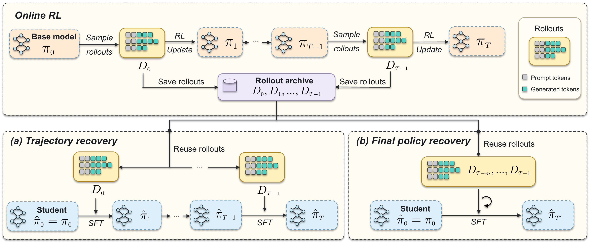
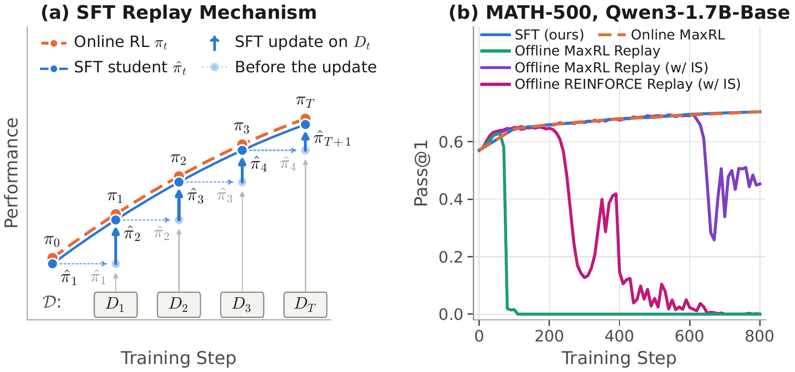
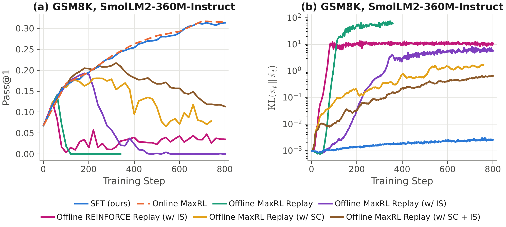
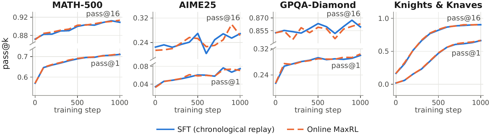
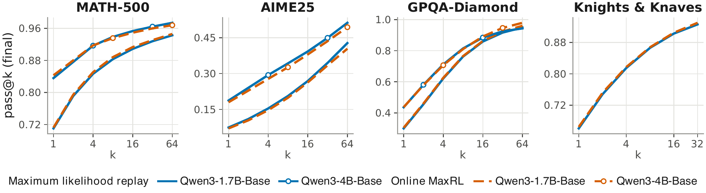
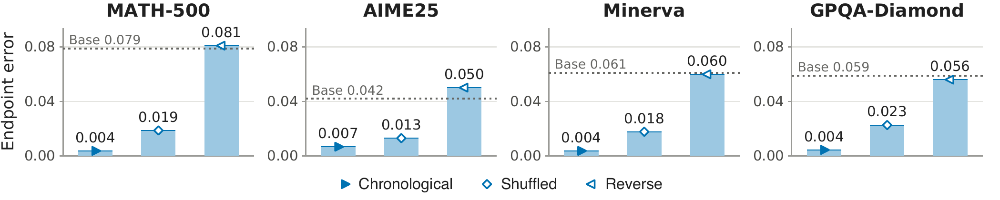
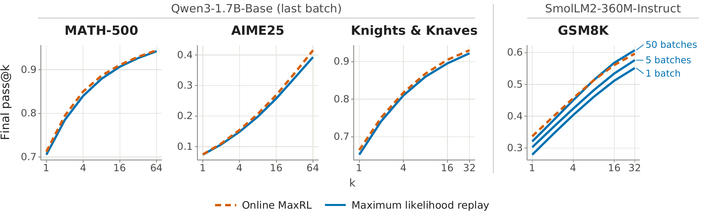
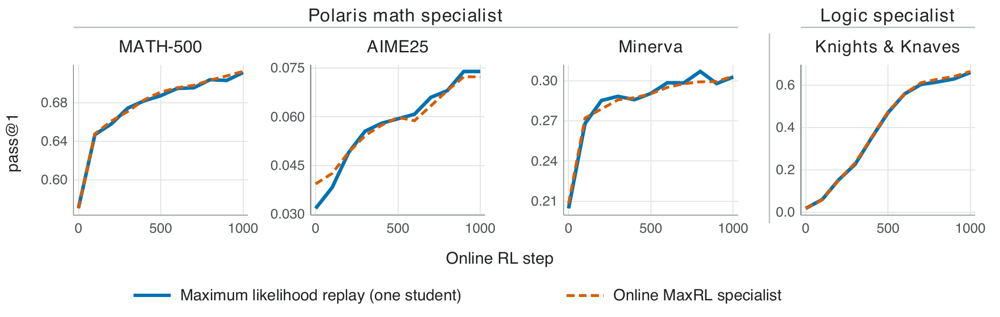
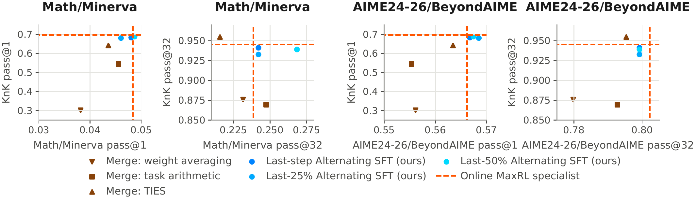

Recovering online RL from its saved rollouts. Online RL samples a batch $D_t$ from its current policy $\pi_t$ at every step. We save every batch to a rollout archive. (a) A student starting from the base model takes one SFT update on each batch in order and recovers the whole training trajectory. (b) Repeated SFT on the rollouts of the last few steps recovers the final policy.

Maximum likelihood recovers online RL. Offline RL replay collapses. MATH-500 pass@1 of Qwen3-1.7B-Base trained only on the archived rollouts of an online MaxRL run. SFT (blue) follows online MaxRL (orange, dashed). Replaying the RL updates collapses, even with importance sampling.
Broadly speaking, reinforcement learning (RL) post-training converts compute into model capabilities by training on model-generated data. Typically, the rollouts are discarded after each update, and the knowledge acquired during RL resides in the model weights. In this work, we investigate how much of this knowledge is retained in the rollouts themselves. A natural first attempt is to replay the original RL algorithm on archived rather than freshly generated rollouts, but this leads to catastrophic collapse. We provide a simple explanation for this phenomenon, which in turn suggests a remedy: maximum likelihood on the archived rollouts. Surprisingly, starting from the same base model and replaying the rollouts in the order in which they were generated, without any distinction between correct and incorrect responses, is sufficient to recover the performance of online RL. In fact, a single maximum likelihood update per rollout batch closely tracks the entire learning curve of online RL. Furthermore, maximum likelihood on the rollouts of the last few RL steps often suffices to recover the final model's performance. This suggests that much of the compute invested in RL goes into discovering an improved sampling distribution rather than learning it from samples.
At every step $t$, online RL samples a batch of responses $D_t$ from its current policy $\pi_t$, scores them with a verifier, and uses them for a single update. For a prompt $x$ with success probability $p_t(x)$, the update of REINFORCE, RLOO, GRPO and MaxRL takes the common form
$g_t(x)=w_t(x)\,\mathbb{E}_{y\sim\pi_t(\cdot\mid x)}\big[(r(x,y)-p_t(x))\,\nabla\log\pi_t(y\mid x)\big]$
where the prompt weight $w_t(x)$ distinguishes the algorithms. Once the update is applied, $D_t$ is usually thrown away. We instead keep every batch in the order it was generated, which gives the rollout archive $\mathcal{D}=(D_0,D_1,\ldots,D_{T-1})$. We then ask how much of the online run can be recovered from this archive alone. We distinguish two goals.
Reproduce the performance of the model at every step of training.
Reproduce only the performance of the final model.
A natural first attempt is to rerun the original RL updates on the archived rollouts. Starting from the same base model $\hat\pi_0=\pi_0$, we process the batches in their original order with the same update rule, rewards and hyperparameters. The responses still come from $\pi_t$, but their scores are now evaluated at the replayed policy $\hat\pi_t$.
$g_t^{\mathrm{replay}}(x)=w_t(x)\,\mathbb{E}_{y\sim\pi_t(\cdot\mid x)}\big[(r(x,y)-p_t(x))\,\nabla\log\hat\pi_t(y\mid x)\big]$
Let $\pi_t^+$ be the distribution of the successful responses of $\pi_t$. Holding the rollout policy fixed, this update is gradient ascent on two competing terms.
$-\mathrm{KL}(\pi_t^+\,\|\,\hat\pi_t)$
Matches the replayed policy to the correct responses.
$+\mathrm{KL}(\pi_t\,\|\,\hat\pi_t)$
Comes from the baseline. Its gradient vanishes only on-policy.
Online, the baseline term is harmless. In replay, any small discrepancy between $\hat\pi_t$ and $\pi_t$ lets this term push the two policies further apart, and the drift compounds over successive updates.
On GSM8K with SmolLM2-360M-Instruct, uncorrected MaxRL replay collapses while the divergence from the rollout policy grows by several orders of magnitude. Importance sampling and score centering delay the collapse but do not prevent the replayed policy from falling behind online RL. SFT on the same rollouts keeps the divergence small throughout training.

Offline RL replay drifts away from the policy that generated the rollouts. (a) GSM8K pass@1. (b) $\mathrm{KL}(\pi_t\,\|\,\hat\pi_t)$ between the policy $\pi_t$ that generated each batch and the trained model $\hat\pi_t$.
Takeaway 1: Replaying the RL updates on saved rollouts drifts from the original run and collapses.
The collapse suggests a remedy. Instead of pushing away from the rollout policy, we fit a student to it. Maximum likelihood on the responses sampled by $\pi_t$, correct and incorrect alike, minimizes exactly the divergence that replay increases.
$\mathcal L_t(q) = -\mathbb{E}_{x\sim\rho,\,y\sim\pi_t(\cdot\mid x)}\big[\log q(y\mid x)\big] = \mathbb{E}_{x\sim\rho}\big[\mathrm{KL}\big(\pi_t(\cdot\mid x)\,\|\,q(\cdot\mid x)\big)\big] + \mathrm{Const.}$
An exact fit gives $\hat\pi_{t+1}=\pi_t$, so the student follows the online run one step behind. In practice, starting from the same base model, we take a single maximum likelihood update on each archived batch in chronological order. We refer to this procedure as supervised fine-tuning (SFT). It uses no rewards and no RL objective.
Each SFT update pulls the student $\hat\pi_t$ back toward the policy $\pi_t$ that generated the batch, so small errors are corrected instead of amplified.
Over 1,000 steps of MaxRL on Qwen3-1.7B-Base, the student closely tracks online pass@1 and pass@16 on MATH-500, AIME25, GPQA-Diamond and Knights and Knaves. On Knights and Knaves, it follows online MaxRL from near-zero accuracy through the steep rise in performance. The mean absolute gap in pass@$k$ ranges from 0.2 to 1.1 percentage points.

Chronological SFT on archived rollouts follows the learning curve of online MaxRL. Pass@1 and pass@16 of Qwen3-1.7B-Base for SFT on the rollouts in their original order (blue, solid) and for online MaxRL (orange, dashed).
At the end of training, the student matches online MaxRL across all evaluated values of pass@$k$, for Qwen3-1.7B-Base and Qwen3-4B-Base. The same procedure also recovers online GRPO and RLOO.

Final-checkpoint pass@$k$. SFT on the MaxRL rollouts in their original order (solid) and online MaxRL (dashed), for Qwen3-1.7B-Base (blue/orange) and Qwen3-4B-Base (green/red).
Takeaway 2: One maximum likelihood update per batch, in order, recovers online RL from its own rollouts.
If the student sees batch $D_{\sigma(s)}$ at replay step $s$, an exact fit gives $\hat\pi_{s+1}=\pi_{\sigma(s)}$. The student ends wherever its last batch came from. Chronological replay ends at $\pi_{T-1}$, reverse replay ends at the base model $\pi_0$, and shuffled replay ends at a random step.
On MATH-500, reverse replay first jumps from about 57% to 70% pass@1, close to the final online model, and then falls back to about 57% as it reaches the earliest batches. Chronological replay tracks online MaxRL, and shuffled replay levels off below it. Chronological replay has the smallest endpoint error on every benchmark.


Replay-order interventions. Top, pass@1 of SFT on the same archive in chronological, shuffled and reverse order. Bottom, the endpoint error of each order at step 1000.
Takeaway 3: The student's performance is set by the rollouts it is currently learning from.
If only the final model matters, the history may be unnecessary. Maximum likelihood on the rollouts of the last $m$ steps has the mixture of the last $m$ rollout policies as its unrestricted optimum.
$\displaystyle q^\star(\cdot\mid x) = \frac{1}{m}\sum_{t=T-m}^{T-1}\pi_t(\cdot\mid x)$
Late in training the policy changes little, so this mixture is close to the final RL policy.
For Qwen3-1.7B-Base, repeated SFT from the base model on the rollouts of the last RL step alone recovers the performance gained over a thousand RL steps, on math and on Knights and Knaves. This is only 0.1% of the distinct rollouts generated during training. For SmolLM2-360M-Instruct on GSM8K, more batches are needed, and the last 50 recover most of the performance.

Endpoint recovery from the last RL step's rollouts. Final pass@$k$ of online MaxRL (orange, dashed) and of SFT from the base model on the rollouts of the last RL step (blue). For SmolLM2-360M-Instruct, SFT also trains on the last 5 and 50 steps.

How much of the last step's rollouts is needed. SFT on a random subset of $n$ of the 4096 rollouts of the last RL step, compared with the final online MaxRL checkpoint.
Takeaway 4: Much of the compute in RL goes into discovering a better sampling distribution, not into learning it from samples.
Since maximum likelihood works on data rather than on weights, the archive can be reused beyond recovering the original model.
We train two Qwen3-1.7B-Base specialists with MaxRL, one on math and one on Knights and Knaves. A single student replays both archives in chronological order, taking one update on each specialist's batch per step. It tracks the learning curves of both specialists on their own tasks. Using only their last-step rollouts, data-space composition retains most of the performance of both specialists and generally gives a better trade-off than merging their weights.

SFT on all rollouts of two RL specialists follows both training curves.


Composing two RL specialists. Pass@$k$ on MATH-500 and Minerva against Knights and Knaves. Data-space composition is compared with weight-space merges of the two final checkpoints. The upper-right corner is best.
We train Qwen3-0.6B-Base on the archived rollouts of an online MaxRL run of Qwen3-1.7B-Base. Replay of the whole archive and of the last step alone both closely track distillation from the final checkpoint on MATH-500 and Minerva. Replay needs neither the final model nor any new generations.

Transfer from Qwen3-1.7B-Base to Qwen3-0.6B-Base. Pass@$k$ of the smaller model trained on samples from the final policy (distillation), on all rollouts, or on the rollouts of the last step.
Replaying the original RL updates on saved rollouts is unstable. Yet starting from the same base model and taking a single maximum likelihood update on each archived batch, in chronological order, closely tracks the online RL learning curve without access to rewards. Recovering the final model's performance often requires only a small fraction of the rollouts generated during training.
RL thus produces a dataset from which the original model's performance can be recovered. The same archives can combine independently trained specialists or train a smaller model. As models grow and RL runs get longer, what fraction of the training history will still be needed to recover their final performance?
@article{sheng2026recovered,
title = {Reinforcement Learning Can Be Recovered From Its Own Rollouts},
author = {Sheng, Jiayi and Gu, Jingwen and Zeng, Guanning and Zhou, Zhaoyi
and Viel, Stefano and Wang, Qianqian and Tajwar, Fahim and Zanette, Andrea},
journal = {arXiv preprint},
year = {2026},
}